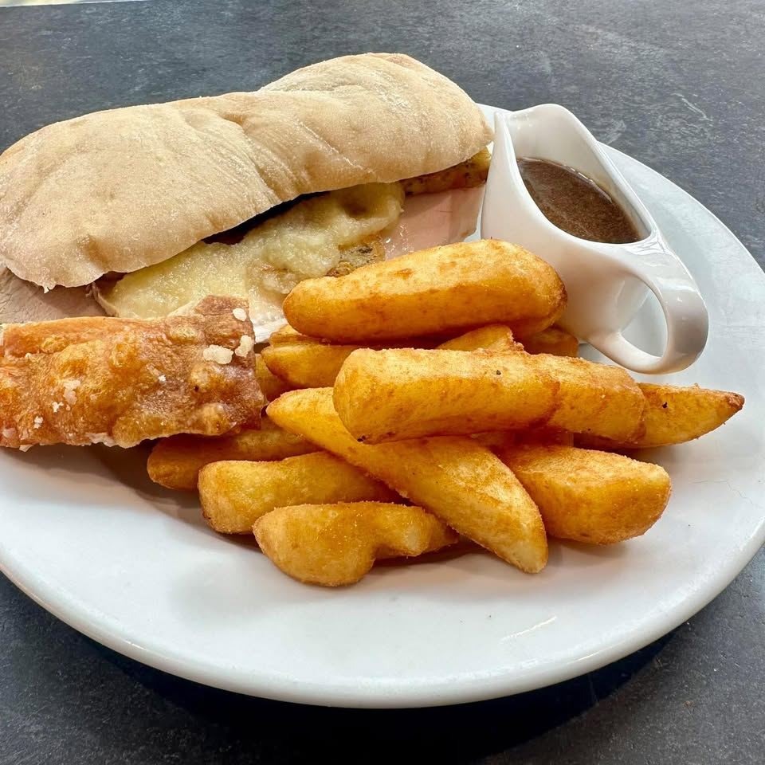
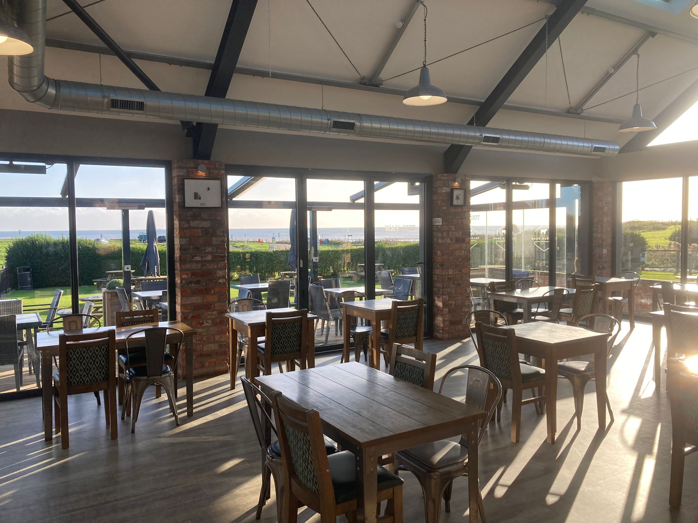
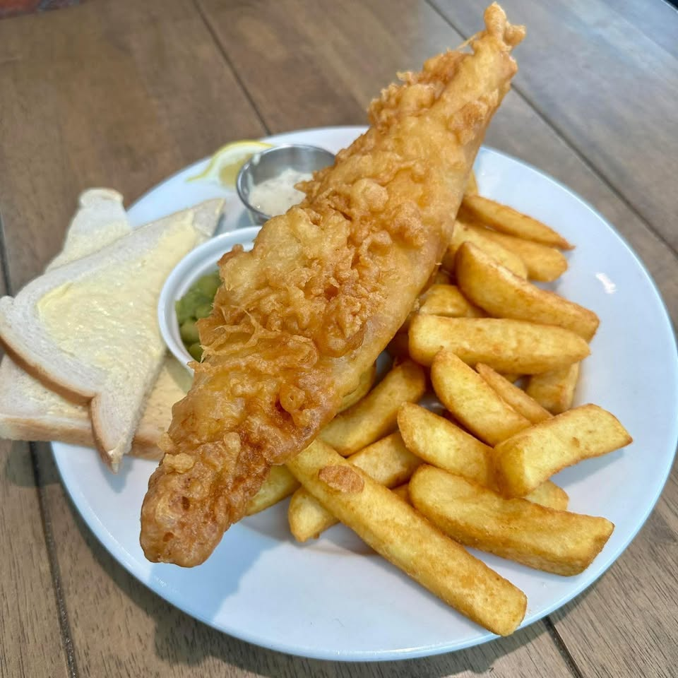
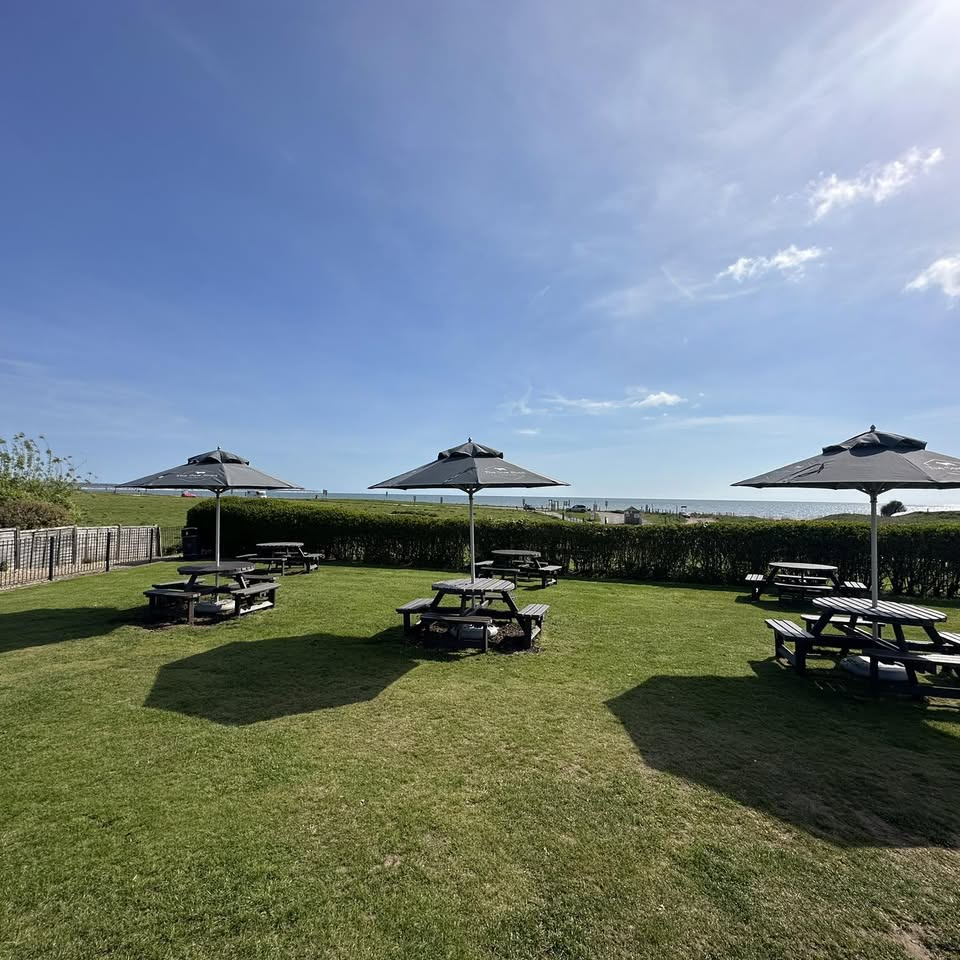
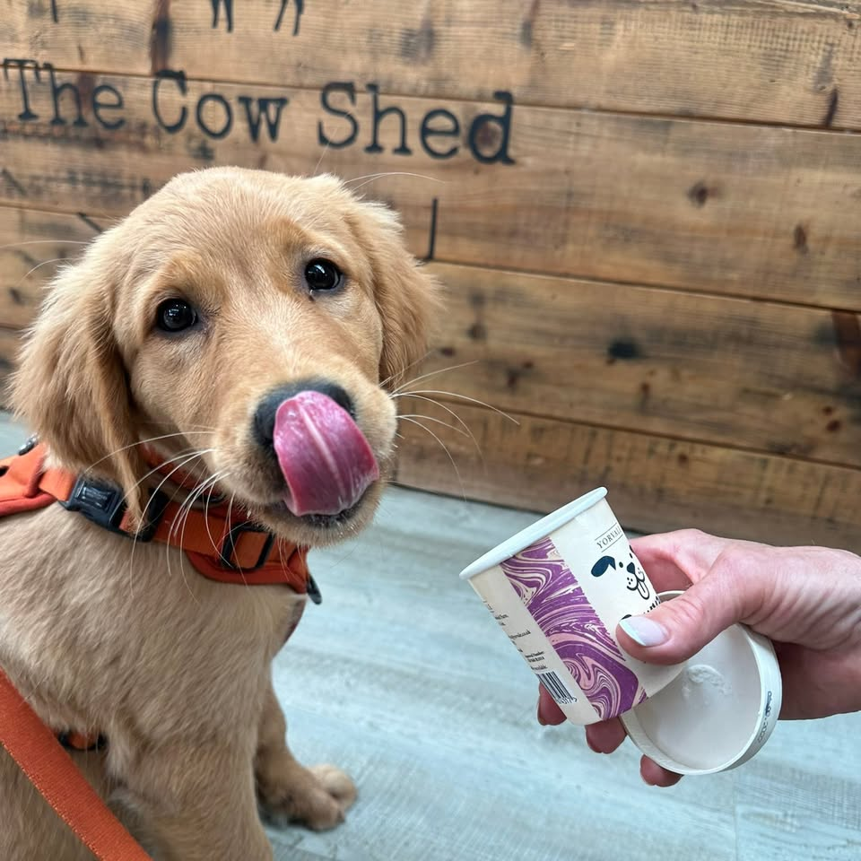

01 · FROM THE FARM
Hot roast beef sandwich
Made with The Cow Shed's own home-reared Auburn Farm beef.

CAFÉ · TAKEAWAY · FOUR MILES SOUTH OF BRIDLINGTON
Sea views, proper café food and a warm place to land after the sand. Dogs welcome. No booking needed.
FROM AUBURN FARM TO YOUR TABLE
The Cow Shed keeps things simple: good local ingredients, generous café favourites and something sweet waiting by the counter.
View the full menu →
Made with The Cow Shed's own home-reared Auburn Farm beef.

Fresh daily specials join burgers, baps and familiar favourites.
BAKED ON THE PREMISES
Cakes, scones, traybakes and sausage rolls are made here—not brought in from somewhere else.
See today's counter on Facebook →
YOUR FRAISTHORPE BEACH STOP
Start with coffee before a walk, come back hungry for lunch, or pick up an ice cream from the Calf Shed in the summer months.
From Auburn Farm, served in burgers and hot roast beef sandwiches.
Cakes, scones, traybakes and savoury bakes made on the premises.
Sit inside, find a sunny table outside, or take something down to the sand.

NO FUSS, NO RESERVATION
The team will take it from there.
Take me to The Cow ShedPLAN YOUR VISIT
Tuesday – Sunday9:30am – 3:30pm
MondayClosed*